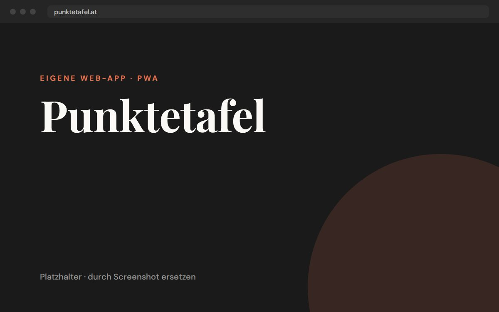

Eigene Web-App · PWA
Punktetafel
Punktezählen bei Karten- und Würfelspielen, ohne Zettel und ohne Account. Spieler eintragen, Runden anschreiben, die Tafel rechnet zusammen, zeigt den Stand und kürt den Sieger. Läuft komplett im Browser, auch offline, und lässt sich als App installieren. Die Daten bleiben am Gerät.
Aktuell drin: Wizard, Flip 7, Skyjo, Jassen, Kniffel, Watten und 6 nimmt!
Next.js
React
TypeScript
PWA
Jetzt ausprobieren →
